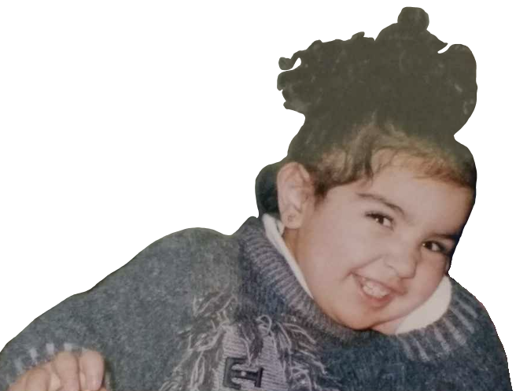
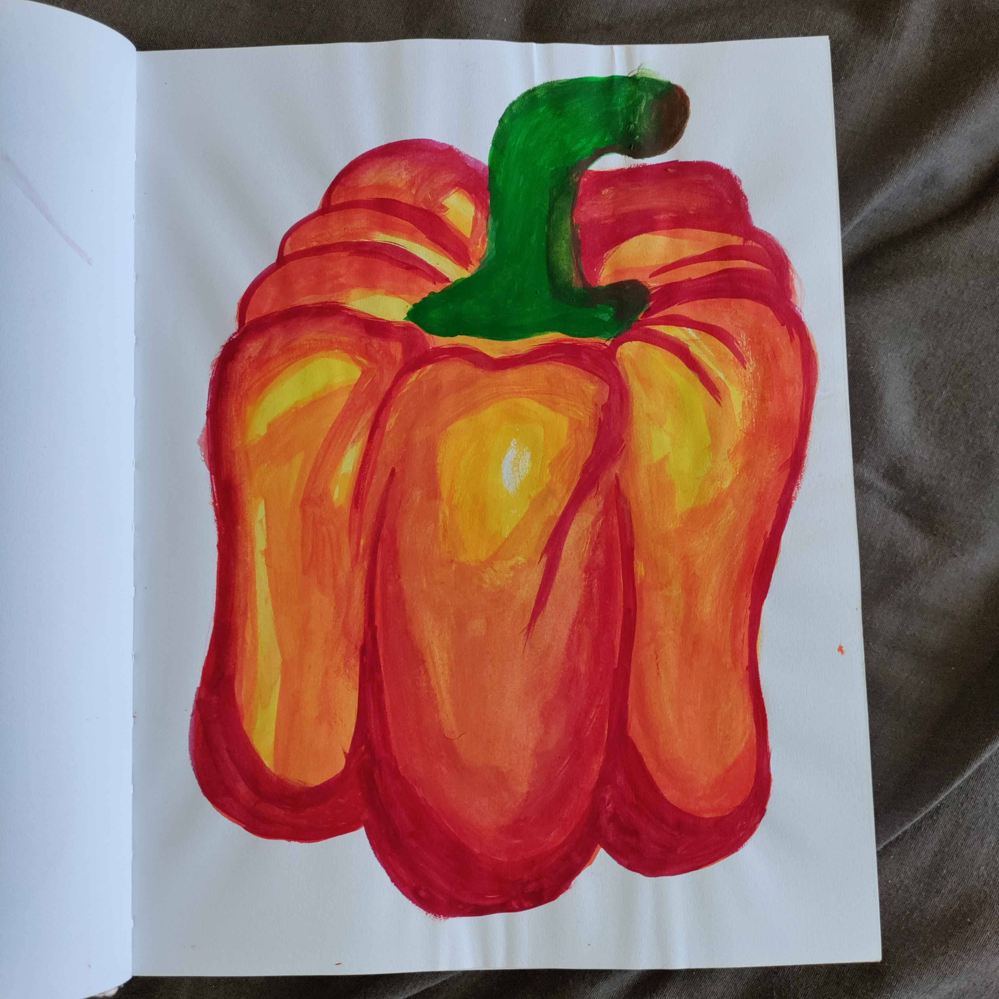
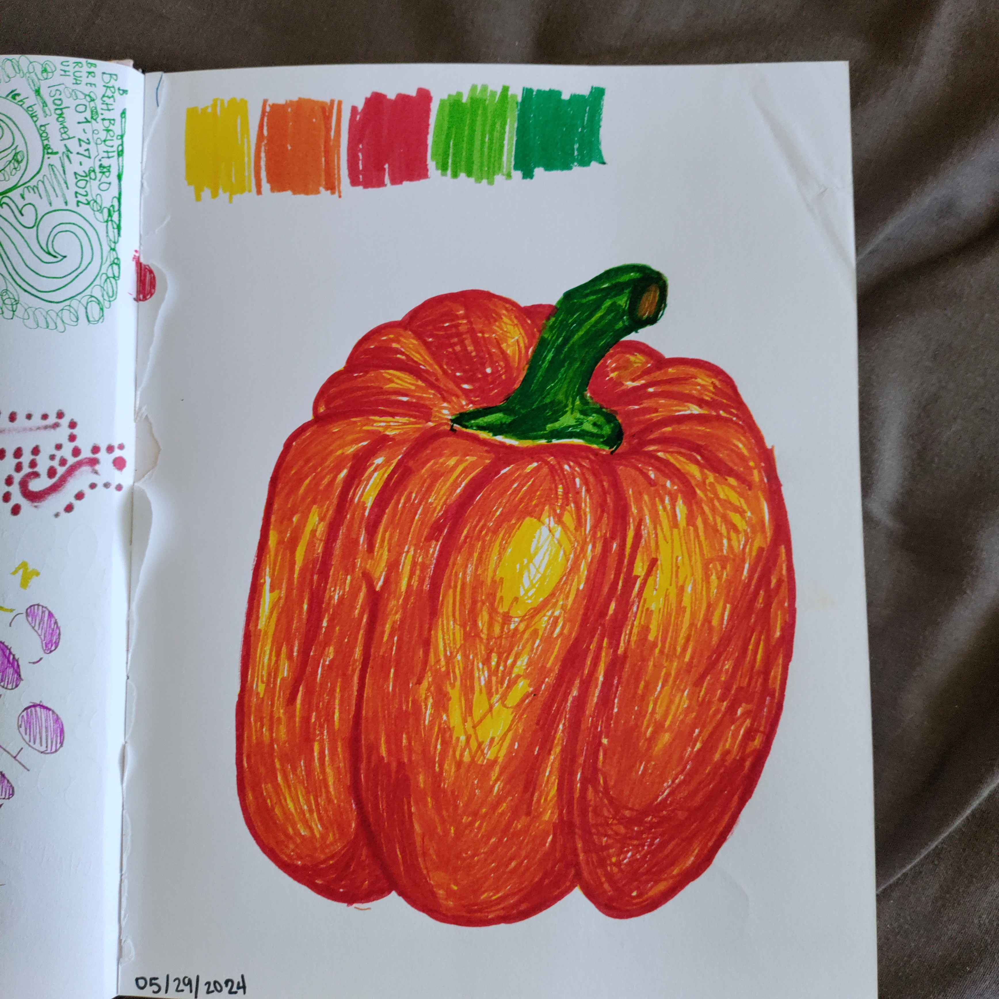
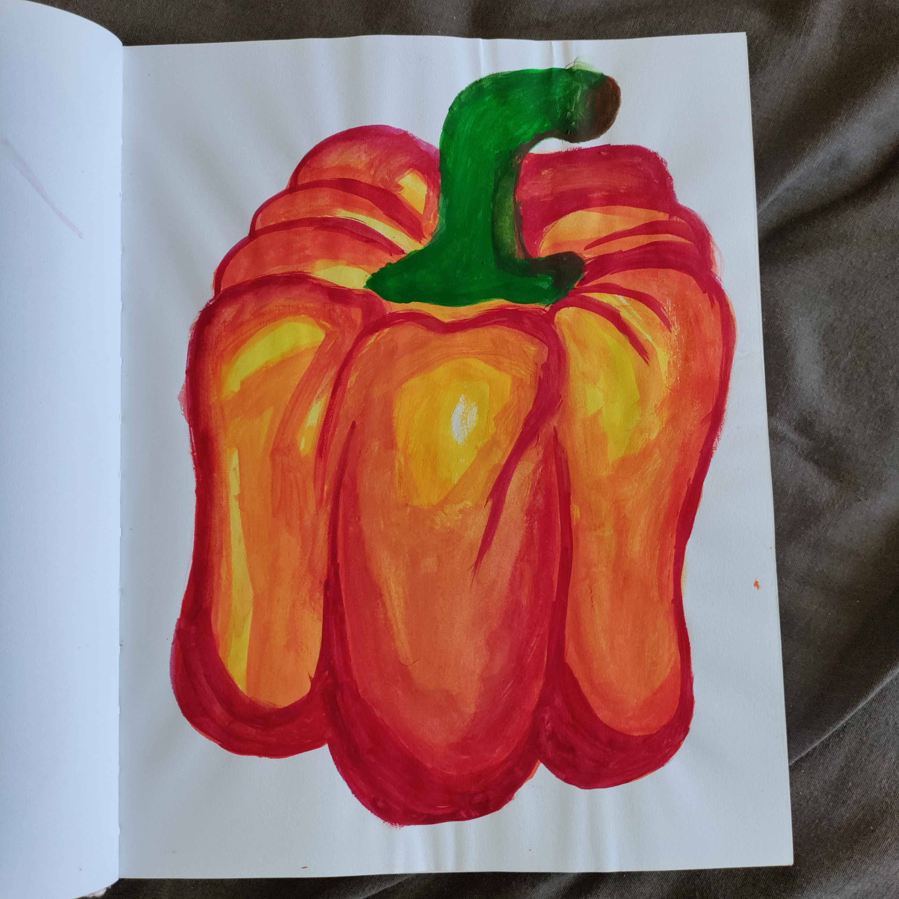
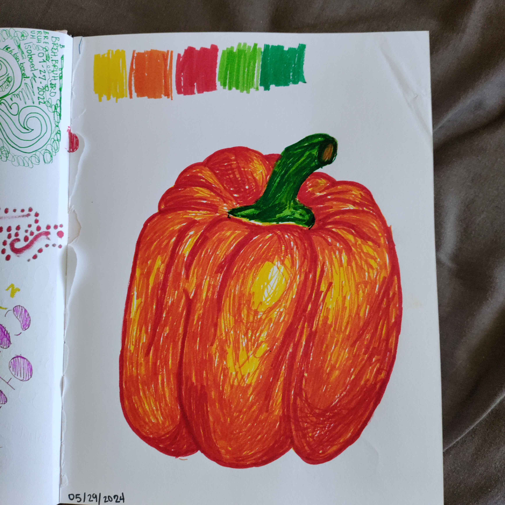

Manji's Mind
A genuine and vulnerable look into mah life
This is me
Hi! I'm Manji & I'm here to say I hope you've been having a lovely day & if you haven't, well, maybe that can change just give me a chance to put a smile on yo face
I hope this will be a delightful experience for you, where you get to know me un-obnoxiously lol.

Manji
Okay, let's be a little more real now. My name is Iman and my nickname is Manji or Moonji. Manji comes from Jumanji (congrats if you guessed it!) which was my OG nickname. Moonji is a variation that factors in my love for the moon.
To put it simply, Iman means "faith" in Arabic. To be more precise, it means the trust, belief, and recognition of the existence of God. This is a neutral name, meaning both male and female babies can be given this name. Some famous examples are Iman Shumpert the basketball player, and Iman the model (and former wife of David Bowie).
One time I looked up what "manji" could mean in other languages just in case I needed to do a lil reworking on dat nickname... but turns out it's a symbol representing strength and endurance. It was also often engraved on samurai swords. Sooo, I guess you could say that it's pretty legit and totally fits my personality.
Q: Where is manji?
A: USA
i live here. Particularly in Florida.

I'm not a Florida man, I swear. Here's my Florida man birthday article though.
A: mah face (babi)
cheery young lass i was
- Palestinian 🇵🇸
- gorlie gorl 💅🏼
- gen Z 🫠
- just a chill guy (˶ᵔ ᵕ ᵔ˶)

Q: Who is manji?
Q: Why is manji?
A: Because
I am a result of a biological process that I will never share on my webiste. But anywayyyy This serves as a fun form of freative fexpression (i'm an alliteration genius) and I want to give those who may know me or not a lil peephole into the expanding mini-universe that is mah mind. I studied Computer Science in college (university) so I might as well do something related to it but like do something that actually interests me. I've been getting into copywriting recently and this will also function as a portfolio mayhaps. Hit me up if you want a brilliant, non-boujie, budget-friendly, bopywriter to beautify and boost your business. Also, I'm bored and words are one of my greatest passions after people, of course. Anywhooooooosies, keep explorin mah mind and you'll be amazed by what you find!
Hobbeez & Skillz
These are basically all the hobbies I am willing to share on the interwebs. They're mainly artistic, so I have listed the some media I use. Click to see what I've made!
- crocheting →
- painting →
- digital art →
- pastels →
- needle-point →
- writing
- poetry →
- mini-essays →
- copy →
- zine-making →
- reading
- gaming
- LEARNING
 





Intchreshtsh
Nothing to click on here, this is just a list of subjects I love to learn about and teach to others. You can possibly expect some articles/posts, art, videos, etc. on my blog and YouTube channel about the following:
- Anime
- Art (mainly visual)
- Anatomy & Physiology
- Literature
- Etymology
- Health & Nutrition
- Marketing
- Pedagogy
- Psychology
- Religion & Spirituality
- Sociology
- Video Editing
- Web Development
Himmee up
Let's have a conversation! Let's connect and get on the same goated wavelength!
 Feel free to contact me through any of the following platforms for any requests, criticisms, or general inquiries!
Feel free to contact me through any of the following platforms for any requests, criticisms, or general inquiries!
Blawg
Dive into my mind by reading my opinions, reflections, art, and research.
I have a lot of thoughts I want to share and get feedback about, so if you want to have a conversation with me, scroll up to see how! So go ahead and explore from these samples:
Ekstra
This website has been built brick by brick (openly-source bricks) by MY OWN TWO HANDSES. It took some time, but it sure is satisfying to get to personalize it for free, but with great difficulty smh my head. I hope this has been a good experience for you, and if it hasn't please let me know how I can improve! I explained earlier the reason for creating this website, but I'll reiterate it anyway BECAUSE I CAN LOLOLOL. I'm here to be honest and share my thoughts, creativity, and values with anyone willing to read/listen. It's important to be authentic and unapologetic about it, so I will try not to feel shame or embarrassment with what I choose to share. If you want me to write about something, or want to collaborate on something, or have any other (appropriate) requests please do not hesitate to reach out to me!